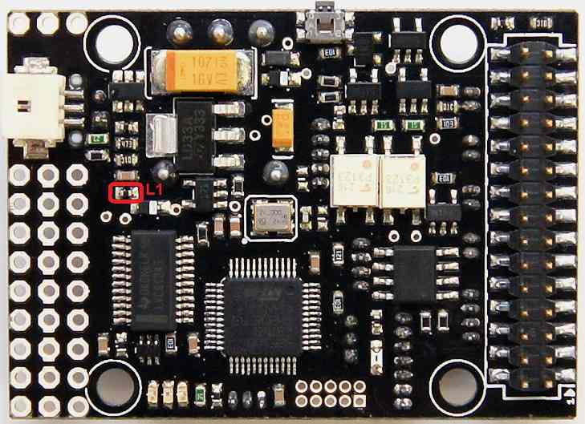

Archived:PX4IO Overview¶
Warning
ARCHIVED
The PX4FMU (“PX4”) is end of life and is not generally available for purchase - ditto this companion board! This article is made available for existing users.
The PX4-IO board Contains its own on board microcontroller and stacks with the PX4-FMU board.
Built in Brownout proof direct battery input power supply.
8 High speed servo PWM outputs.
Futaba SBUS or PPM-SUM serial servo output.
Futaba SBUS, PPM-SUM or Spektrum serial inputs from your receiver.
Two user assignable relays, two 1/2 amp 5 volt outputs and an analog input port.
All power inputs are reverse polarity protected.
All power outputs are current limited.
All logic inputs and outputs are ESD protected.
All PX4IO boards use positive retention DF13 connectors and a variety of connectors.
Wires with pre-crimped sockets and pre-made cables are available inexpensively for the PX4-IO from 3DRobotics.
The Bottom of the PX4IO Board¶
{kind=link}
Note the Red Circled item above is ferrite L1.
For high power servos you can remove L1 to allow you to supply power from an external power supply to a servo connector center pin.
{kind=link}
{kind=link}
{kind=link}
{kind=link}